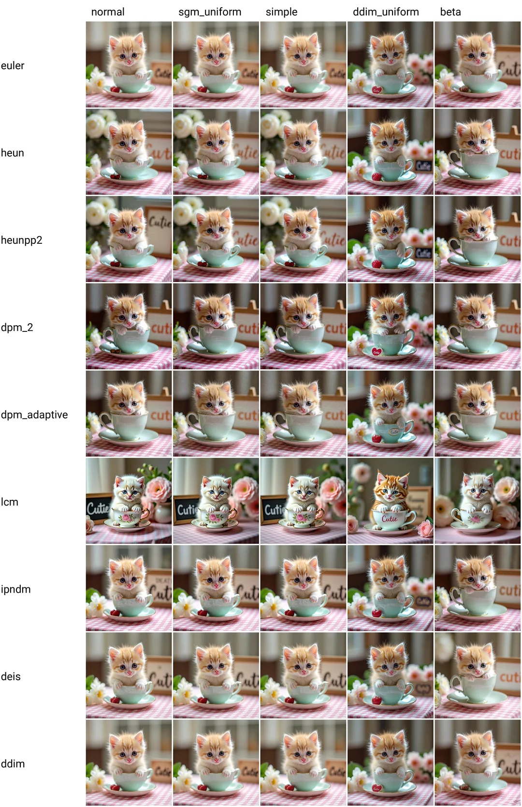
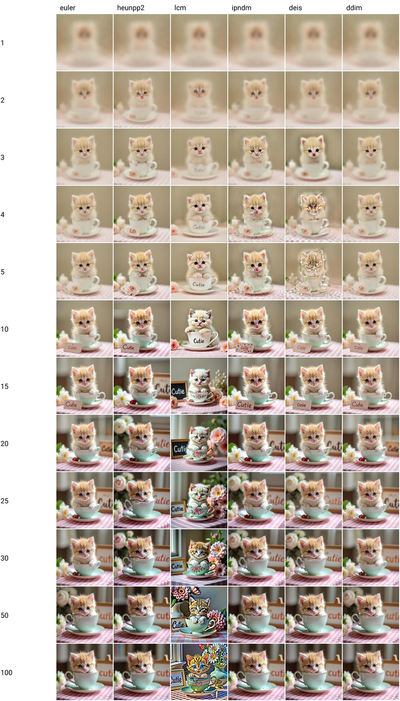

10 Reasons to Use ComfyUI & Programming for AI Generation:
1. Develop Custom Nodes: Your Native Python Environment
For any programmer, ComfyUI's most powerful feature isn't its visual graph, but its foundation: the entire platform is a live, extensible Python environment. The ability to develop custom nodes transforms ComfyUI from a consumer tool into a developer's IDE. It’s a system designed by a developer, for developers, for those who see a problem and instinctively think, "I can write a function for that."

A Node is Just a Python Class: The Developer's On-Ramp
The barrier to entry for a developer is exceptionally low because a custom node is, fundamentally, just a
Python class in a .py file. There's no complex SDK to install or proprietary language to
master. You are working directly in Python, with immediate access to its entire ecosystem of libraries.
The structure is a simple and elegant contract. As outlined in the official documentation, you define the node's "API" through class attributes, which is incredibly intuitive for anyone familiar with object-oriented programming: [1]
# example_node.py - Place this file in ComfyUI/custom_nodes/
class ExampleNode:
"""
A simple example node that doubles an integer and returns it.
"""
# This method defines the inputs your node will accept.
@classmethod
def INPUT_TYPES(cls):
return {
"required": {
# The name of the input, and its type + options
"value": ("INT", {"default": 1, "min": 0, "max": 1000}),
}
}
# This defines the data type(s) your node will return.
RETURN_TYPES = ("INT",)
# You can also name the outputs for clarity in the UI.
RETURN_NAMES = ("doubled_value",)
# This is the name of the main function that will be executed.
FUNCTION = "process"
# This sets the category for your node in the "Add Node" menu.
CATEGORY = "Example"
# This is the core logic of your node.
def process(self, value):
# Your Python code goes here.
# For this example, we just double the input value.
doubled = value * 2
# Nodes must return a tuple, even if there's only one output.
return (doubled,)
After saving this file and restarting ComfyUI, this class automatically becomes a fully functional node in the UI. It's a "write, save, run" loop that feels incredibly fast and modern.
A real-world example: the powerful Detailer node from the Impact Pack is a custom node built with this same underlying Python structure.
Why This is a Game-Changer for Developers
This approach provides a development experience that is superior to traditional plugin systems:
- Your Full Toolbox is Available: You are not sandboxed. Need to call a web API?
import requests. Need to perform complex array manipulation?import numpy. You have the full power of the Python ecosystem at your disposal. - Rapid, Iterative Development: The feedback loop is instant. Code your logic, save the file, and refresh the UI. This allows for incredibly fast prototyping and debugging of your ideas.
- From Simple Helpers to Complex Systems: You can start with a simple utility node (like the example above) and scale up to wrapping entire third-party libraries or implementing novel machine learning algorithms, all within the same framework.
In essence, ComfyUI invites developers to build their own blocks, not just use the ones provided. It respects your existing Python skills and provides a powerful, flexible, and convenient framework to extend its capabilities without limits. It's the ultimate "scratch your own itch" environment for generative AI.
Sources:
[1] Official Documentation. Available: https://docs.comfy.org/development/core-concepts/nodes
[2] Official Code Examples on GitHub (for source code of official examples). Available: https://github.com/comfyanonymous/ComfyUI_examples
2. Implementation of custom precision features
From a developer’s perspective, a LoRA (Low-Rank Adaptation) is not an artistic filter; it's a high-efficiency patch for a massive, pre-compiled binary (the checkpoint model). It’s a targeted, lightweight modification that alters the model's behavior at runtime. ComfyUI excels by providing the tools to apply and orchestrate these "patches" with surgical precision, turning model customization into an engineering discipline.
The Technical Breakdown: Patching the Right Modules
A LoRA doesn't just "add a style"; it injects small, trained weight matrices into specific, massive modules of the diffusion model. Understanding which module to patch is critical for achieving the desired result. The two primary targets are:
- The UNet: This is the "backend" rendering engine of the model, responsible for the actual denoising process that forms the image structure, composition, and visual style. Patching the UNet affects what you see.
- The CLIP Text Encoder: This is the "frontend" command parser. It's the component that interprets your text prompt and translates it into a mathematical representation the UNet can understand. Patching the CLIP model affects how the model understands your words.
A LoRA for a specific character needs to teach the UNet what that character looks like, while a LoRA for a new artistic style might need to modify both the UNet (for the visual look) and the CLIP (to associate the style with a new trigger word).

Chaining LoRAs in ComfyUI is equivalent to a sequential patching pipeline.
The `Load LoRA` Node: Your Patching API
The `Load LoRA` node is a developer's interface for this process. It takes the base model and CLIP objects as inputs and outputs the patched versions. Its key parameters are your arguments for the patching function:
strength_model: A float that controls the intensity of the patch applied to the UNet. A value of 1.0 is a full application; 0.5 is a partial blend.strength_clip: A float controlling the patch intensity for the CLIP text encoder.
This separation is crucial. You might want to apply a style LoRA's visual patch (UNet) at full strength but only slightly modify the text encoder's understanding of your prompt.
Orchestrating LoRAs: Building a Specialised Pipeline
ComfyUI's true power lies in its ability to chain these patching operations. You can construct a pipeline where a model is progressively modified by specialized LoRAs, much like a CI/CD pipeline applies sequential build steps:
- Start with a Base Model: Load your foundational checkpoint (e.g., SDXL).
- Apply Character LoRA: Pass the model through a `Load LoRA` node configured with a character LoRA to teach the model a specific person or object.
- Apply Style LoRA: Take the output of the first patch and feed it into a second `Load LoRA` node to apply a consistent artistic style (e.g., "anime" or "impressionistic oil painting").
- Apply Detailer LoRA: Finally, pass the styled model through a third LoRA trained specifically to fix common problems, like improving the rendering of hands or eyes.
The final "model" object that gets passed to the KSampler is a sophisticated, in-memory composite of the base model and all the patches you applied, each with its own precisely controlled strength.

The effect of a Style LoRA: a targeted patch that completely alters the visual output of the UNet. (Source: Civitai)
This modular, transparent, and controllable approach to model modification is what makes ComfyUI a true developer's tool for precision generative AI.
3. Prompt Engineering as Code
For a developer, a prompt in ComfyUI is not just a text field; it's a string literal passed as a key argument to the core text encoder function. How you format that string—its syntax and content—is a form of lightweight programming. ComfyUI gives you raw, direct access to this process, allowing you to engineer your inputs with a precision that is impossible in more abstracted tools.
Syntax is Model-Dependent: Know Your "Compiler"
A crucial detail for any developer is that there is no single, universal prompt syntax. The correct syntax is determined by the text encoder of the model you are using. Treating the model as your "runtime" or "compiler" is key. Using the wrong syntax is like passing an incorrectly formatted argument—it may not throw an error, but it won't produce the intended result.
- Classic Syntax (Stable Diffusion 1.5/2.1, SDXL): Most standard models use the syntax
popularized by Automatic1111. Here, you use parentheses and a numerical weight to increase a token's
influence and square brackets to decrease it. This gives you fine-grained, numerical control.
(masterpiece:1.3), best quality, a [man] in a (red:1.2) suit. - Modern Syntax (FLUX.1): Newer, highly advanced models like FLUX.1-dev from Black
Forest Labs simplify this. They are trained to understand Markdown-style emphasis. This is more intuitive
but less numerically precise. Knowing this distinction is essential for getting the model to perform as
expected.
A **masterpiece** of a man in a **red** suit.
A developer understands that this is not arbitrary; it's a change in the model's "API contract." ComfyUI lets you work with either, as long as you provide the correct input for the chosen model.
The Model is Your Runtime: Prompting for Different Architectures
How you write a prompt should change based on the model's architecture. It's the difference between writing for a high-level language with a rich standard library versus writing for a low-level, high-performance environment.
- Large, Language-Rich Models (e.g., FLUX.1 14B): These models have a more nuanced understanding of natural language. You can write more descriptive, complex sentences and trust the model to parse the meaning. For a developer, this means you can focus on writing a clear "spec" in your prompt rather than hacking together keywords.
- Speed-Optimized Models (e.g., SDXL Turbo, LCMs): These models are designed for high-throughput, low-latency generation. The trade-off is often a reduced sensitivity to complex prompts. The prompt for these "fast" models should be treated like a highly optimized API call: short, direct, and potent. Long, descriptive sentences can be ignored or misinterpreted.
Programmatic Prompt Construction
This is where a developer truly shines. ComfyUI's node-based system means a prompt doesn't have to be a static string. It can be dynamically constructed:
- Concatenation: Use multiple text nodes as variables and combine them. You can have a base "style" node and append different subject nodes to it in a loop.
- Wildcards & Dynamic Payloads: Use custom nodes like "Wildcards" to pull random lines from text files, creating dynamic and varied prompts automatically. This is the equivalent of template-based code generation.
- API-Driven Prompts: The ultimate form of control. Write a custom node that calls an external API (like a local LLM server or a weather service) to generate a prompt based on real-time data, then feeds that string into the text encoder.
In ComfyUI, you are not just a prompter; you are a prompt developer. You have the low-level control over syntax, the high-level understanding of different runtimes (models), and the tools for programmatic construction, allowing for a truly engineered approach to creative generation.
Sources:
1. The official Hugging Face page for the FLUX.1-dev model, detailing its capabilities: https://huggingface.co/black-forest-labs/FLUX.1-dev
2. ComfyUI Documentation provides examples of basic and advanced prompting techniques.
4. Algorithmic Control Over the Generation Process
For a user, the sampler is often just a dropdown list of esoteric names. For a developer, ComfyUI exposes it for what it truly is: the core, swappable algorithm of the diffusion process. This isn't just about picking a style; it's about having direct, programmatic control over the numerical method used to solve the generative task. This is a level of control that speaks directly to an engineering mindset.
Sampler & Scheduler: The Algorithm and its Strategy
In the context of diffusion models, generating an image is an iterative process of removing noise from a random tensor. From a developer's perspective, this can be understood as:
- The Sampler: This is the numerical algorithm (an ODE or SDE solver) that performs the
denoising at each step. Different samplers (like
Euler,DPM++ 2M, orHeun) represent different mathematical methods for traversing the path from pure noise to a clean image. Some are faster but less accurate; others are more stable but computationally intensive. - The Scheduler: This is the "strategy" that guides the sampler. It dictates the size and number of steps (the "noise schedule" or "sigmas") the algorithm will take. It answers the question: "At step 5 out of 20, how much noise should we expect to remove?" The separation of sampler and scheduler is a powerful design pattern, allowing you to pair different algorithms with different step-progression strategies.
ComfyUI doesn't hide this relationship. It gives you direct access to both components, primarily through the KSampler node family.
The KSampler Node: Your API for Generation
The KSampler node is your primary interface for controlling this process. A developer should
see its inputs not as simple settings, but as arguments to a core function:
steps: The number of iterative calls to the sampler algorithm.cfg: The "Classifier-Free Guidance" scale. Think of it as a scalar multiplier controlling how strongly the algorithm should adhere to the prompt.sampler_name&scheduler: The direct selection of the algorithm and its strategy.denoise: This is a crucial parameter, ranging from 0.0 to 1.0. It determines the "strength" of the operation. A value of 1.0 means the input latent image is completely ignored (starting from pure noise), while a value of 0.5 means the process starts halfway, preserving much of the original latent structure. This is your main tool for img2img-style operations.
This granular control allows for advanced, programmatic techniques like chaining samplers: you can run the
first 10 steps with a fast, exploratory sampler like Euler, and then pipe the resulting latent
into a second KSampler that uses a more detailed sampler like DPM++ 2M SDE for the final 15
steps of refinement.
Visualizing the Impact of Your Choices
The choice of sampler and scheduler is not trivial; it has a dramatic and often non-intuitive impact on the final image, even when all other parameters are identical. The image below compares various combinations, demonstrating how different algorithms interpret the same starting noise and prompt.

Furthermore, the number of steps required for a quality result varies wildly between algorithms. Some, like
traditional Euler, show clear improvement with more steps. Others, like the highly optimized
LCM, are designed to produce excellent results in as few as 4-8 steps, making them ideal for
rapid generation. Understanding this trade-off between speed and quality is key to optimizing any generative
pipeline.

In conclusion, ComfyUI provides a developer with what they value most: precise control over core algorithms. It turns the mysterious art of sampling into a concrete engineering problem of selecting and configuring the right numerical methods for the task at hand.
Sources:
For a deeper dive, developers can inspect the KSampler implementation directly in the ComfyUI source code,
which is the ultimate documentation.
1. KSampler implementation details: ComfyUI `nodes.py` on GitHub
5. Managing Workflow with Python Code
ComfyUI has rightfully earned its reputation as one of the most flexible image generation tools due to its node-based architecture. It allows you to build complex and non-linear processes that are unavailable in simpler interfaces. However, as the complexity of tasks grows, even the most convenient visual editor hits its ceiling. What if you need to generate hundreds of variations of a single image? Or integrate generation into a web service? This is where the visual interface gives way to code, and the ComfyUI-to-Python-Extension becomes a bridge between the worlds of creativity and engineering. Whether you are a data scientist, software developer, or an AI enthusiast, this tool streamlines the process of implementing ComfyUI workflows in Python.
Transform This:

Into This:
import random
import torch
import sys
sys.path.append("../")
from nodes import (
VAEDecode,
KSamplerAdvanced,
EmptyLatentImage,
SaveImage,
CheckpointLoaderSimple,
CLIPTextEncode,
)
def main():
with torch.inference_mode():
checkpointloadersimple = CheckpointLoaderSimple()
checkpointloadersimple_4 = checkpointloadersimple.load_checkpoint(
ckpt_name="sd_xl_base_1.0.safetensors"
)
emptylatentimage = EmptyLatentImage()
emptylatentimage_5 = emptylatentimage.generate(
width=1024, height=1024, batch_size=1
)
cliptextencode = CLIPTextEncode()
cliptextencode_6 = cliptextencode.encode(
text="evening sunset scenery blue sky nature, glass bottle with a galaxy in it",
clip=checkpointloadersimple_4[1],
)
cliptextencode_7 = cliptextencode.encode(
text="text, watermark", clip=checkpointloadersimple_4[1]
)
checkpointloadersimple_12 = checkpointloadersimple.load_checkpoint(
ckpt_name="sd_xl_refiner_1.0.safetensors"
)
cliptextencode_15 = cliptextencode.encode(
text="evening sunset scenery blue sky nature, glass bottle with a galaxy in it",
clip=checkpointloadersimple_12[1],
)
cliptextencode_16 = cliptextencode.encode(
text="text, watermark", clip=checkpointloadersimple_12[1]
)
ksampleradvanced = KSamplerAdvanced()
vaedecode = VAEDecode()
saveimage = SaveImage()
for q in range(10):
ksampleradvanced_10 = ksampleradvanced.sample(
add_noise="enable",
noise_seed=random.randint(1, 2**64),
steps=25,
cfg=8,
sampler_name="euler",
scheduler="normal",
start_at_step=0,
end_at_step=20,
return_with_leftover_noise="enable",
model=checkpointloadersimple_4[0],
positive=cliptextencode_6[0],
negative=cliptextencode_7[0],
latent_image=emptylatentimage_5[0],
)
ksampleradvanced_11 = ksampleradvanced.sample(
add_noise="disable",
noise_seed=random.randint(1, 2**64),
steps=25,
cfg=8,
sampler_name="euler",
scheduler="normal",
start_at_step=20,
end_at_step=10000,
return_with_leftover_noise="disable",
model=checkpointloadersimple_12[0],
positive=cliptextencode_15[0],
negative=cliptextencode_16[0],
latent_image=ksampleradvanced_10[0],
)
vaedecode_17 = vaedecode.decode(
samples=ksampleradvanced_11[0], vae=checkpointloadersimple_12[2]
)
saveimage_19 = saveimage.save_images(
filename_prefix="ComfyUI", images=vaedecode_17[0]
)
if __name__ == "__main__":
main()
Why Code? The Philosophy of a Programmatic Approach
Moving from a visual interface to code is not just a change of tools, but a paradigm shift. It allows you to move from manually creating single masterpieces to building scalable and automated systems.
- Industrial-Scale Automation: Imagine you need to create a set of character images with 50 different emotions or under 10 different lighting angles. With a Python script, you can set up a loop that iteratively changes the necessary parameters, running the generation for each combination automatically.
- Reproducibility and Reliability: Code is a precise and self-contained instruction. It guarantees that anyone with the same environment will get an identical result. This is critically important for collaboration, debugging, and maintaining an archive of experiments.
- Dynamic Control and Logic: Unlike a static visual interface, code is dynamic. You can use conditional operators (`if/else`) to change the process flow based on intermediate results. For example, automatically restarting a generation with different parameters if the outcome doesn't meet certain criteria.
- Seamless Integration: A script is a universal building block. You can embed it into any application: create a Discord bot, build an API for your website, or integrate ComfyUI into a complex VFX pipeline.
Anatomy of the Generated Script
When you click the "Save As Script" button, the extension analyzes your node diagram and converts it into a logically connected Python script. All key parameters, such as the prompt text or `noise_seed`, are extracted into variables so you can easily modify them without diving into the complex structure of the JSON graph.

Practical Use Cases
- A/B Testing: Write a simple loop that iterates through a list of samplers or CFG values, generating the same image with each one for comparison.
- Creating Animations: Programmatically generate intermediate frames between several key prompts, smoothly blending their embeddings to create controlled video sequences.
- Integration with LLMs: Use the API of large language models (e.g., via LMStudio) to first generate a detailed prompt from a short idea, and then pass it to your ComfyUI script for image generation.
The ComfyUI-to-Python-Extension is not just a conversion utility. It is a powerful tool that frees you from the constraints of a graphical interface and allows you to think like an engineer. It transforms ComfyUI from an interactive "sandbox" into a reliable and programmable engine for generative art.
Sources:
Official Code project on GitHub : Visit
the Project on GitHub
6. Leverage the Community as an Open-Source Ecosystem
No developer builds a modern application from scratch. We use frameworks, libraries, and open-source packages to accelerate our work. In the world of generative AI, the community serves the exact same purpose. For a programmer, engaging with the community is not about scrolling through forums; it's about strategically leveraging a vast, distributed repository of code, pre-trained models, and shared knowledge to build better, faster.
The "Package Managers" for AI Assets: Civitai & Hugging Face
These platforms are the `npm` or `PyPI` of the AI generation world. They are structured repositories where you can find pre-built components for your projects.
- Civitai: This is the de-facto hub for community-trained models. From a developer's perspective, it’s a massive asset database where you can find specialized Checkpoints, LoRAs, Textual Inversions, and VAEs. The key is that these are not just downloads; they come with structured metadata—trigger words, base model dependencies, and licenses—which is essential for programmatic use.
- Hugging Face: If Civitai is a community-focused asset store, Hugging Face is the professional, academic-grade repository. This is where foundational models (like Stable Diffusion itself and FLUX) are officially released. For a developer, it's the primary source for core model files, research papers, and datasets.

Civitai provides not just models, but the crucial metadata needed to use them effectively.
The "Frameworks" and Cross-Compatibility: ComfyUI & A1111
The communities around major tools like ComfyUI and the Automatic1111 WebUI function like ecosystems around different software frameworks (e.g., React vs. Vue). While their internal extension systems are different (ComfyUI's custom nodes vs. A1111's extensions), the core assets are often universal.
- Asset Portability: A
.safetensorsLoRA file trained by a user in the A1111 community will work perfectly in ComfyUI. A developer understands this is like a shared library (`.dll` or `.so`) that can be loaded by different host applications. This cross-compatibility massively expands the pool of available resources.
The "Source Code" Hub: GitHub
This is the true heart of the community for any developer. While Civitai hosts the compiled models, GitHub hosts the source code that creates and uses them. This is where you find the most valuable assets:
- Custom Nodes: This is the most critical resource. The entire extended functionality of
ComfyUI lives in GitHub repositories. You don't just download a node; you
git clonea repository. This means you can read the source code to understand exactly how it works, fork it to make your own modifications, or submit pull requests to fix bugs. - ComfyUI Manager: This popular extension is essentially a package manager for custom nodes. It automates the process of finding, installing, and updating nodes by managing their Git repositories for you. It's the `apt` or `brew` for ComfyUI.

The "Forums" and Knowledge Bases: Reddit & Discord
These are the Stack Overflow and Slack channels of the AI community. They are invaluable for debugging, learning advanced techniques, and staying on the cutting edge.
- Subreddits:
r/ComfyUIandr/StableDiffusionare essential. You can find solutions to complex workflow problems, discover new tools, and see what's possible. - Discord Servers: Offer real-time discussion with other developers and artists. This is where you can ask highly specific technical questions about node development or API integration.
For a developer, the community is not a passive resource. It is an active, open-source ecosystem to be integrated into your development lifecycle, dramatically reducing redundant work and accelerating innovation.
7. Architecting Solutions via the API
For a developer, the most critical feature of ComfyUI is that its web interface is entirely optional. The UI is just one client that consumes a powerful backend API. Understanding and leveraging this API is the key to moving beyond manual generation and architecting robust, automated, and scalable solutions. This is where you stop being a user and start being a systems builder.
The ComfyUI API: Your Direct Backend Access
ComfyUI exposes a powerful API that allows for full programmatic control. Developers can interact with it directly, bypassing the UI entirely. The core components, as detailed in the official API documentation, are:
- HTTP Endpoint: You can send a workflow (as a JSON object) to the
/promptendpoint to queue a new task. This is the primary mechanism for triggering generations programmatically. - WebSockets: After queuing a task, you can connect via WebSockets to receive real-time updates on the progress, including previews of the image as it's being generated or notifications upon completion.
A simple Python script using the `requests` library can trigger a complex workflow, demonstrating how easily ComfyUI integrates into a standard developer toolchain:
import requests
import json
# Your ComfyUI server address
server_address = "127.0.0.1:8188"
# Load your workflow from a JSON file
with open("workflow.json", "r") as f:
prompt_workflow = json.load(f)
# Send the workflow to the API
response = requests.post(f"http://{server_address}/prompt", json={"prompt": prompt_workflow})
Why Call an External API from a Local Tool?
This hybrid approach combines the best of both worlds:
- Access to Proprietary Models & Speed: Services like FLUX1.ai or OpenArt offer highly optimized, managed versions of cutting-edge models. They handle the hardware, dependency management, and scaling, often providing results with lower latency than a local setup could achieve.
- Zero Hardware Dependency: You can design a complex workflow on a laptop without a powerful GPU. The heavy lifting—the actual image generation—is offloaded to the cloud service via an API call.
- The Hybrid Pipeline (The Killer Feature): This is where the developer's mindset creates
unmatched solutions. You can build a workflow that:
- Uses an external API (like FLUX1.ai) to generate a high-quality "base" image from a simple prompt.
- Takes the returned image as an input for local processing.
- Applies intricate ControlNets, local LoRAs, face detailing, or inpainting using ComfyUI's granular tools to modify the externally-generated image.
You get the raw quality and speed of a commercial service, combined with the infinite control and customization of your local ComfyUI setup.
Building Your Own Services on Top
While you can call the ComfyUI API directly, the real power comes from building your own API wrapper around it using frameworks like FastAPI or Flask. This allows you to:
- Create Simplified Endpoints: Expose a clean endpoint like
/generate-characterthat only requires a few parameters (like character class and art style), while hiding the complexity of the full ComfyUI workflow JSON internally. - Implement Business Logic: Add authentication, user management, rate limiting, and logging—all the features required for a production-grade application.
- Integrate State-of-the-Art Models: When a new, powerful model like FLUX.1 is released, you don't need to wait for a service to support it. You can download the model, build a ComfyUI workflow around it, and immediately expose its capabilities through your API. The model becomes a backend component you control.

8. Using full developers Toolchain
The true power of ComfyUI for a developer isn't just its flexibility, but its "hackability." It's not a closed application; it's a backend engine designed to be plugged into the same professional toolchain you use for everyday software engineering. This lets you build robust, version-controlled, and automated generative pipelines instead of just clicking buttons.
Here are ten essential developer tools that transform ComfyUI into a programmable creative core:
- Code Editor / IDE (e.g., Visual Studio Code)
- Version Control System (e.g., Git, GitHub)
- Local LLM Server (e.g., LM Studio, Ollama)
- Containerization Platform (e.g., Docker)
- API Client (e.g., Postman, Insomnia)
- Interactive Computing Environment (e.g., Jupyter Notebooks)
- Package Management Tools (e.g., Pip, Poetry, Conda)
- Cloud Storage (e.g., AWS S3, Google Cloud Storage)
- CI/CD Services (e.g., GitHub Actions)
- Code Debugger (e.g., Python's `pdb`, VS Code Debugger)
1. Code IDE: Visual Studio Code
You don't edit production code in a simple text editor, and the same should apply to your generative workflows. Developing custom nodes and scripts in a professional IDE like VS Code is non-negotiable for serious work. It brings intelligence and structure to your creative coding.
- Develop Custom Nodes: Get full autocompletion, type-checking (Mypy), and error linting (Pylint) as you write your Python nodes. This catches bugs before you even run them.
- Script Workflows: Convert a visual graph to a Python script and refine it with the full power of your IDE, turning a one-off process into a clean, reusable module.
- Debug Efficiently: Use the integrated debugger to set breakpoints inside your custom node's code, step through the logic, and inspect variables in real-time.
 VSCode Debugger official documentation
VSCode Debugger official documentation
2. Version Control: Git & GitHub
Moving from `prompt_v4_final.json` to a Git repository is a paradigm shift. Git allows you to treat your creative process like a software project, providing a safety net and a collaboration framework.
- Version Everything: Commit your Python scripts, custom nodes, and even the workflow JSON files. Now you have a complete history. If a change breaks your output, you can instantly see the diff and revert.
- Collaborate Professionally: Host your custom node projects on GitHub. Others can contribute via pull requests, report issues, and benefit from your work, while you maintain control over the codebase.

3. Local LLM Servers: LM Studio / Ollama
A Large Language Model is the ultimate developer utility for text manipulation. By running models locally with tools like LM Studio, you get a private, cost-free, and powerful API to supercharge your prompt engineering inside ComfyUI.
- Build "Smart" Nodes: Create a custom node that accepts a simple concept (e.g., "a steampunk library") and calls your local LLM's API to expand it into a rich, detailed prompt complete with artistic styles, camera angles, and negative keywords.
- Automate Content Pipelines: Write a master script that uses an LLM to generate a list of 100 character ideas, then programmatically feeds each one into your ComfyUI workflow script to batch-generate a whole roster of characters.

4. Containerization: Docker
The "works on my machine" nightmare is amplified in AI due to complex CUDA and PyTorch dependencies. Docker solves this by packaging your entire ComfyUI environment into a self-contained, portable container.
- End Dependency Hell: A Dockerfile specifies the exact OS, Python version, CUDA toolkit, and pip packages. This guarantees your setup is 100% reproducible anywhere.
- Deploy Anywhere: A containerized ComfyUI is the first step to deploying your creation as a scalable web service on platforms like AWS, Google Cloud, or a home server.

5. API Client: Postman
ComfyUI runs on an API. A developer interacts with APIs using specialized tools like Postman. This allows you to directly test and understand the backend without even opening the visual interface, which is crucial for automation.
- Inspect the API: Send a prompt request from the UI and inspect the exact JSON payload in Postman to understand how it's structured.
- Test and Debug Scripts: Before writing a complex Python script to queue prompts, build and test the API calls in Postman to ensure your logic and authentication are correct.

6. Interactive Computing: Jupyter Notebooks
Jupyter Notebooks are the data scientist's and ML engineer's sketchbook. They are perfect for rapid, interactive experimentation with your ComfyUI workflows outside the main UI. You can import your exported Python scripts as modules and call them cell by cell.
- Iterate on Prompts: Run a generation in one cell, tweak the prompt in the next, and run it again to immediately compare outputs side-by-side.
- Analyze and Visualize: Load a generated image directly into a numpy array or a Pillow object for analysis. You can check histograms, color profiles, or run other image processing checks right in the notebook.

7. Package Management: Pip, Venv & Poetry
Properly managing your Python environment is fundamental. Relying on a global Python install is a recipe for disaster. Professional package management ensures your ComfyUI setup is isolated, reproducible, and won't conflict with other projects.
- Virtual Environments (`venv`): The baseline of Python development. Create an isolated environment to ensure the packages for ComfyUI don't interfere with anything else on your system.
- Advanced Dependency Management (`Poetry`): For complex projects with many custom nodes, a tool like Poetry provides deterministic dependency locking, making your environment perfectly reproducible for collaborators.

8. Cloud Storage: AWS S3 / Google Cloud Storage
AI assets are massive. Checkpoint files are gigabytes, and you can generate thousands of images. Managing this on a local drive is impractical for serious projects. Cloud storage is the professional solution.
- Centralized Model Store: Write a custom "S3 Model Loader" node. Instead of downloading models to every machine, this node can fetch the required checkpoint directly from a cloud bucket on demand.
- Scalable Output Bucket: Configure your scripts to automatically upload generated images and videos to a cloud storage bucket, creating a central, shareable repository for your project's outputs.

9. CI/CD: GitHub Actions
Continuous Integration / Continuous Deployment is about automating your development workflow. For a ComfyUI project, this means setting up automated quality checks and builds for your custom nodes.
- Automated Testing: Set up a GitHub Action that, on every `git push`, runs a linter on your custom node's code and executes a test script to ensure you haven't broken anything.
- Automatic Docker Builds: Create a workflow that automatically builds a new Docker container with your latest code and pushes it to a container registry, making it ready for deployment.

10. The Code Debugger
When `print()` statements aren't enough, a real debugger is essential. This is especially true when working with the complex data structures inside ComfyUI, like tensors.
- Terminal Debugging (`pdb`): For quick and dirty checks, you can insert `import pdb; pdb.set_trace()` into your custom node's code to pause execution and get an interactive debugging console right in the terminal where ComfyUI is running.
- IDE Debugging: For complex issues, nothing beats the integrated debugger in an IDE like VS Code. Set a breakpoint, run the workflow, and when the code pauses, you can inspect the entire program state, view the shape and type of tensors, and step through your logic line by line.

9. Audio as Data: Programmatic Sound Control
For a programmer, ComfyUI's capabilities extend far beyond the visual domain. Audio is not just sound; it's another form of time-series data that can be loaded, processed, and manipulated through a data pipeline. ComfyUI, particularly with custom node packs, provides the tools to treat audio as a first-class citizen in your generative workflows, enabling powerful applications like source separation and audio-reactive animations.
The Core Tool: ComfyUI-Vextra and the Demucs Model
Most advanced audio capabilities in ComfyUI are enabled by comprehensive custom node packs. The most prominent among these is ComfyUI-Vextra. From a developer's standpoint, this pack is a library that adds a suite of audio processing functions to your environment.
The key model used for source separation within this pack is Demucs, a state-of-the-art deep learning model for Music Source Separation. When you use a Demucs node, you are essentially calling a powerful function:
stems = demucs_model.separate(input_audio_waveform)
This function takes a mixed audio track as input and returns separated data streams for different instruments. The most common model variant, `htdemucs_ft`, is trained to effectively isolate vocals, drums, bass, and "other" sounds. This is not just an audio filter; it's a powerful data extraction technique.

A typical Demucs workflow in ComfyUI: load audio, separate stems, save outputs.
Developer Use Cases: From Separation to Control
Once you treat audio as data, you unlock several advanced, programmatic applications:
- Automated Stemming: Create a batch processing workflow that takes a folder of audio files, separates the vocals and instrumentals from each, and saves them to designated output folders. This is a classic ETL (Extract, Transform, Load) pipeline, applied to audio.
- Audio-Reactive Generation: This is the most powerful application. The output of an
audio node is a data tensor. You can write custom nodes or use existing ones to analyze this data and use
it to drive other parameters. For example:
- Load an audio track and separate the drum stem using Demucs.
- For each frame of a video generation, calculate the amplitude (volume) of the drum waveform.
- Normalize this value (e.g., to a 0.0-1.0 range).
- Feed this value directly into the `noise` or `CFG` input of a KSampler node.
- Data Visualization: Use audio data streams to generate visual representations like spectrograms or waveforms directly within the ComfyUI canvas for analysis or artistic effect.
In ComfyUI, manual audio control is not about having a simple "play" button. It’s about giving developers the low-level access needed to deconstruct audio signals with ML models and use the resulting data to programmatically drive any other part of the generative process.
10. Maximum Control on Every Step
In the world of image generation tools, there are two poles. At one end, there is the elegant simplicity of services like Midjourney, where a single prompt triggers a magical "black box." At the other end is ComfyUI, a tool built on the opposite philosophy: to give the user complete, unrestricted, and transparent control over every stage of the creative process. This transforms you from a simple operator clicking "Generate" into an architect who designs the generation process itself.
What Does "Control at Every Step" Mean?
In most web interfaces, your control is limited to a set of sliders and input fields. ComfyUI breaks this paradigm. Its node-based system is a direct visual representation of the data flow. Every step that is hidden in other systems is a separate, manageable block here:
- Resource Loading: You don't just select a model. You separately load the base checkpoint, the VAE, each LoRA, and each ControlNet. You decide how and in what sequence they are applied.
- Prompt Processing: A prompt isn't just a text string; it's data that passes through a "CLIP Text Encode" node. You can mix multiple prompts, apply different weights, and direct the flow precisely.
- Latent Space Creation: Generation starts with a "noise" canvas. In ComfyUI, you manually create this with an "Empty Latent Image" node, directly setting its resolution and batch size.
- The KSampler: This is the heart of generation, and you have absolute control. You can chain different samplers, or even change the prompt mid-generation, using the output of one phase as the input for the next.
- Post-processing: The generated latent image is not the end. You decide what comes next. Pass it to a "VAE Decode" node? Send it to one or more upscalers? Apply a Face-Detailer? Each step is a node you can add, remove, or configure.
Why Is This Important?
This level of control isn't just complexity for complexity's sake. It provides fundamental advantages:
- Transparency and Debugging: If a result is wrong, you don't have to guess why. You can insert a "Preview Image" node after any stage to see exactly where the process went awry.
- Infinite Flexibility: You are not limited by predefined pipelines. You can create completely new workflows unthinkable in other systems.
- Efficient Resource Usage: You only load the models and components you need for a specific task, allowing complex workflows to run even on less powerful systems.
ComfyUI demands more from the user, but in return, it gives the most valuable thing—complete control. It’s a tool for those who aren't afraid to look "under the hood." Maximum manual control transforms the generation process from blindly following a recipe into a true art of engineering, where the only limitation is your own imagination.